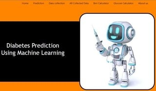

About Me
Hello, everyone! 👋 I'm Avinash, a passionate Learner with a love for Open Source and a strong belief in Learning in Public. Let's embark on this coding journey together 🌐🚀, creating meaningful projects and making a positive impact in the tech community. Happy coding! 💻💞
Projects: Diabetes Prediction Using Machine Learning
The goal of this project is to use machine learning techniques to accurately predict diabetes at an early stage. Serious health issues, such as kidney, heart, eye, and blood pressure problems, can result from high blood glucose levels in the body. To make accurate predictions, the project makes use of a variety of machine learning models, including the Random Forest Classifier, Support Vector Machine,XgBoost Classifier, and Decision Tree Algorithm.Overall, this project demonstrates outstanding performance in reliably identifying whether a person has diabetes or not.
You can reach me at: Email ky0avinash@gmail.com , WhatsApp:9148XXXX40 .